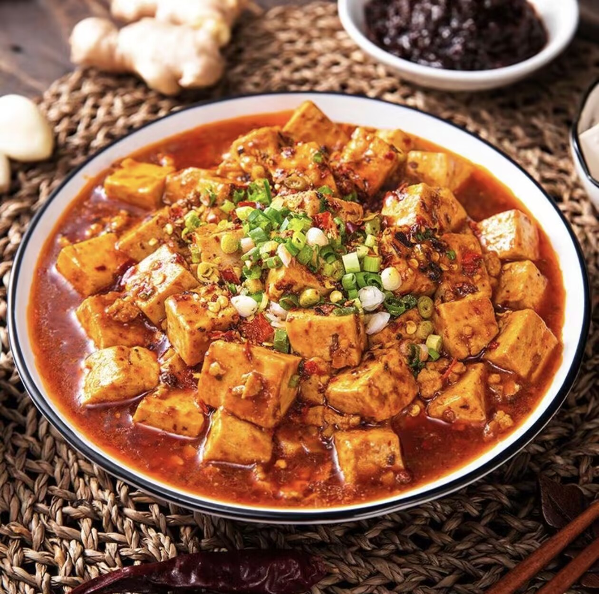
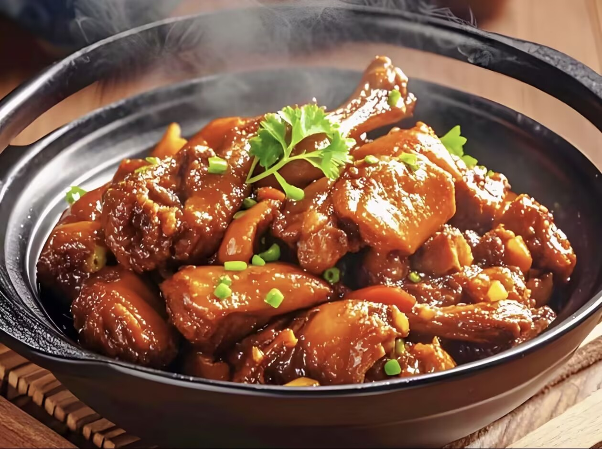
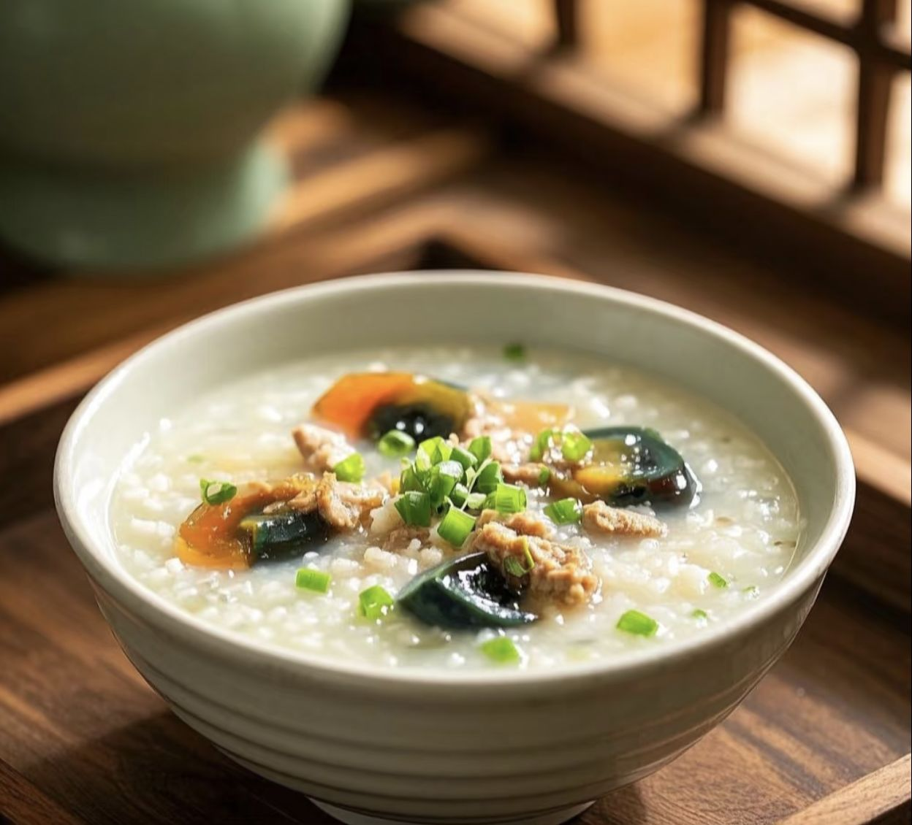

奶奶的拿手菜谱
麻婆豆腐（小红书博主“饭香小团子”版）

食材
- 嫩豆腐 1块（300g）
- 牛肉末 80g
- 蒜末 1勺、姜末 半勺
- 郫县豆瓣酱 1.5勺
- 花椒粒 1小把（约10颗）
- 辣椒粉 半勺（可选）
- 生抽 1勺、蚝油 半勺
- 淀粉 1勺+清水 3勺（调水淀粉）
- 葱花 少许
做法步骤
- 嫩豆腐切1.5cm小块，加少许盐泡冷水5分钟（防碎+去豆腥）
- 冷锅冷油放花椒粒，小火炒出香味后捞出花椒（留底油）
- 下姜蒜末爆香，加牛肉末炒至变色，放豆瓣酱、辣椒粉炒出红油
- 加1碗清水（没过食材），放生抽、蚝油搅匀，大火烧开后下豆腐
- 转中小火煮3分钟，淋水淀粉勾芡，轻轻推匀至汤汁浓稠
- 盛出撒葱花，喜欢麻味可以再撒点花椒粉～
啤酒鸭（小红书博主“yayo心灵解忧铺”版）

食材
- 鸭腿 2只（约600g，剁块）
- 啤酒 1瓶（500ml）
- 姜片 5片、葱段 3段
- 八角 1个、香叶 2片
- 生抽 2勺、老抽 1勺、料酒 1勺
- 冰糖 5颗
- 盐 少许
做法步骤
- 鸭块加姜片、料酒，冷水下锅焯水，撇去浮沫后捞出沥干
- 热锅中放少许油，下鸭块煸炒至表面微黄（逼出鸭油），盛出备用
- 留底油，放姜片、葱段、八角、香叶炒香，加冰糖炒至融化
- 倒回鸭块，加生抽、老抽翻炒均匀，让鸭块裹上糖色
- 倒入整瓶啤酒（没过鸭块），大火烧开后转小火炖40分钟
- 最后开大火收汁，加少许盐调味，汤汁浓稠即可出锅～
皮蛋瘦肉粥（小红书博主“贪吃桐桐妈”版）

食材（2-3人份）
- 大米 80g、糯米 20g（混合煮更软糯）
- 猪瘦肉 50g（里脊）、皮蛋 2个
- 姜片 2片、葱花 少许
- 盐 1小勺、白胡椒 少许、香油 几滴
- 淀粉 少许、料酒 几滴（腌肉用）
做法步骤
- 大米+糯米淘洗后，加足量清水浸泡30分钟；瘦肉切细丝，加料酒、淀粉抓匀腌制10分钟
- 泡好的米连水一起下锅，放姜片，大火烧开后转小火煮25分钟（期间搅拌防粘）
- 下瘦肉丝，用筷子打散，煮5分钟至肉丝熟透
- 皮蛋切丁，倒入粥中，继续煮3分钟
- 加盐、白胡椒调味，关火滴香油，撒葱花搅匀即可～